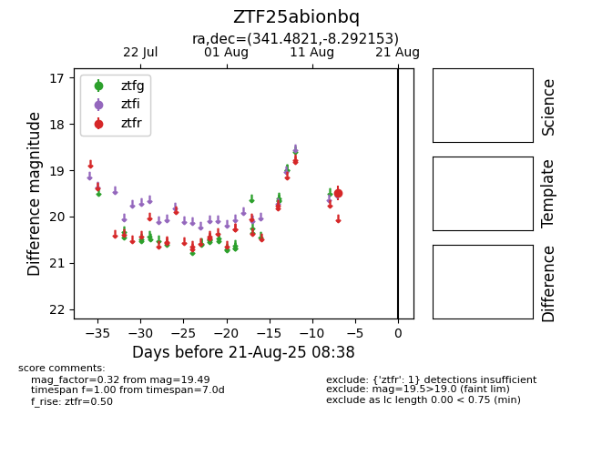

Target ZTF25abionbq at 2025-08-21 08:38, see:
FINK: fink-portal.org/ZTF25abionbq
Lasair: lasair-ztf.lsst.ac.uk/objects/ZTF25abionbq
ALeRCE: alerce.online/object/ZTF25abionbq
alt names
ZTF25abionbq (ztf,alerce)
coordinates:
equatorial (ra, dec) = (341.4821,-8.29215)
galactic (l, b) = (59.4311,-54.85037)
photometry
last ztfr=19.49
1 ztfr detections
